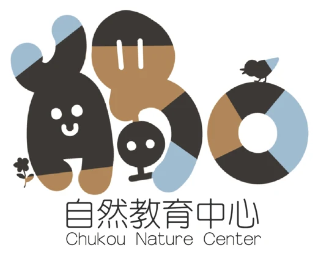
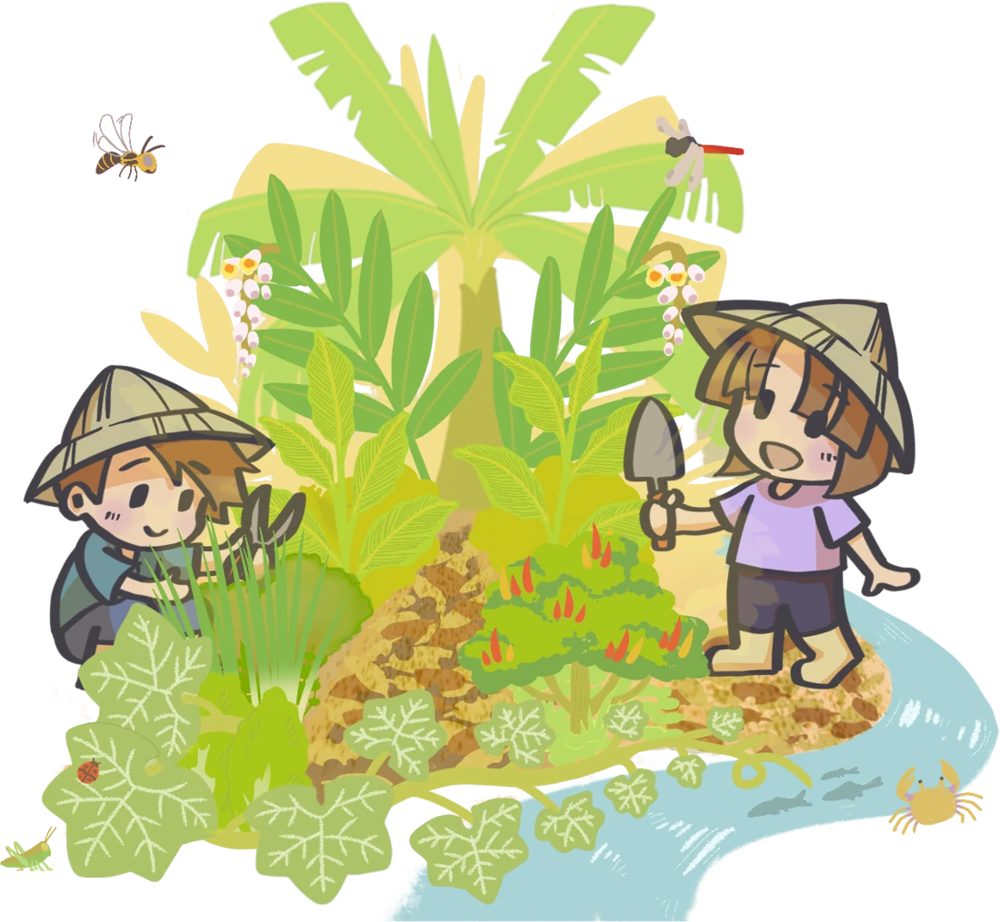

19期森林學堂．2027.01-12

觸口自然教育中心
Chukou Nature Education Center
學校、機構、親子、成人團體，都能在這裡找到適合的自然體驗。選好身分，直接查看課程與費用。
找適合我的活動
Chukou wildlife
認識觸口的生物
課程裡的每一種生物，都是學員在觸口遇見的鄰居。左右滑動看看牠們。
左右拖曳或點箭頭看更多；點生物可到台灣生物多樣性網絡（TBN）看介紹
到 iNaturalist 看觸口的觀察紀錄
iNaturalist 專案收錄大家在觸口拍到的物種，會在新分頁開啟。
2027 annual open activities
年度定期活動日曆
三五好友想一起參加？假日想找親子戶外活動？把日期記進手機行事曆，或加入觸口 LINE 社群就不會錯過新活動。過夜型活動請於兩個月前報名；中心不時也會推出快閃活動，請關注臉書粉絲專頁。
查看 2027 年度日曆（共 9 場活動）
單日活動過夜行程點活動名稱可跳到課程介紹
For schools
學校戶外教學
適合：公私立幼兒園、國中小至大學生。各課程的「上限人數」為一次可接待的人數與班數。
For institutions
跨齡樂學
適合：補習班、安親班、教育機構、親子共學團。對象涵蓋幼兒、國小、國中、高中、成人與親子。
Family day
共學選修日
適合：親子家庭、親子散客、對主題有興趣的散客。想帶孩子一起學習，或參加特定主題？揪不到團沒關係，挑一個日期報名吧！單日型活動於活動前一個月開放報名。
For adult groups
成人團體
適合：機關團體進修、公司研習、社會人士休閒療育。
Bonus
一時二刻的自然野趣小時光
為行程加點料！想讓活動更豐富嗎？難得來一趟觸口，用 1.5 小時補充你的自然能量。每人計價。想為行程加點料，歡迎私訊臉書粉絲專頁或來電 05-259-0211 洽詢。
How to book
如何預約
不用填表單：把想上的課加進「清單」，複製訊息，私訊我們的臉書粉絲專頁就可以了。
- 挑課程，加入清單在課程卡片按「＋ 加入清單」，可以加好幾門。
- 複製訊息打開「我的清單」，按「複製訊息」，補上單位、人數與希望日期。
- 私訊粉絲專頁到臉書粉絲專頁貼上並送出，也可以來電 05-259-0211。
- 等我們回覆中心確認場次、費用與細節後，會回覆您後續流程。
申請時間：團體活動最晚請於一個月前申請；過夜型活動請於兩個月前報名；共學選修日的單日型活動於活動前一個月開放報名。